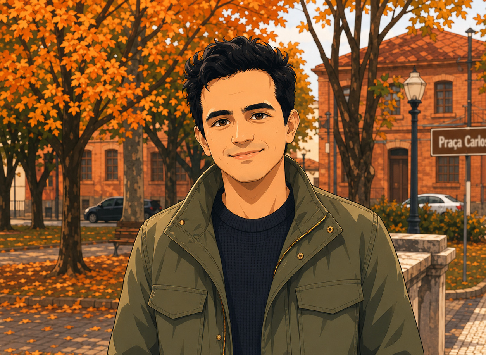
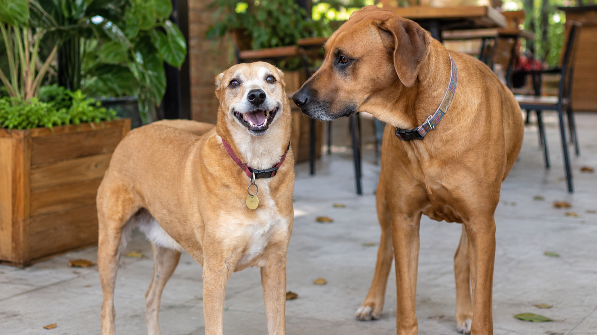

Networks
I have extensive experience with network architecture, connectivity, troubleshooting, performance, and the integration of complex environments.
I am a technology consultant and I combine extensive experience in networks and multimedia with an enduring curiosity about engineering, science, and the ways complex systems connect.
Learn more about me
I was born in Portugal, but Brazil has been my home for many years. Living between the influence of two cultures has shaped the way I communicate, learn, and approach new challenges.
I work as a consultant, helping organizations understand technical challenges and turn them into practical, reliable solutions. I enjoy listening carefully, simplifying complicated subjects, and connecting business needs with the right technologies.
I am also pursuing my second undergraduate degree at Politécnica. Returning to university has strengthened my analytical thinking and reminded me that learning is not limited by age, career stage, or previous achievements.
My professional background spans network infrastructure, multimedia systems, technical strategy, and consulting. I am especially interested in solutions that are dependable, understandable, and designed for long-term value.
I have extensive experience with network architecture, connectivity, troubleshooting, performance, and the integration of complex environments.
I have worked with digital media, audiovisual systems, streaming technologies, content delivery, and multimedia workflows.
I translate technical complexity into clear decisions, helping teams evaluate options, reduce risk, and build realistic plans.
Technology is an important part of my life, but it is not the whole story. Family, science, reading, music, and time with my dogs help me maintain a broader perspective.

I love studying relativity, quantum mechanics, cosmology, and the surprising questions that appear when we examine reality at its largest and smallest scales.
I am the proud father of a wonderful child. Parenthood has taught me patience, responsibility, creativity, and the importance of enjoying everyday moments.
My two dogs are part of the family and excellent companions for long walks. They are also persistent reminders to step away from the screen and enjoy the world outside.
I am always interested in exchanging ideas about technology, consulting, networks, multimedia, education, and modern physics.
Send me an email